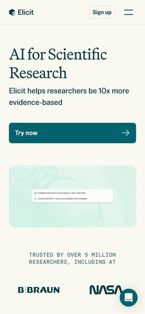
먼저 보세요01Elicit
와 포인트'Research agent' 입력창에 질문이 들어가면, '논문·웹·임상시험 검색' 같은 작업 단계가 한 줄씩 나타나고 진행 표시가 돕니다.
우리 시연이라면애로 원문을 넣으면 '법령 확인 · 공장정보 대조 · 개선사례 확인'이 한 줄씩 켜지는 장면.
KICXUP 챌린지 · 시연 화면 다시 만들기 전 레퍼런스
공단 담당자용 '기업애로 AI 데스크'와 2지망 후보 'AI 가상 피팅' — 두 과제의 시연 화면을 다시 만들기 전에 고른 레퍼런스 25곳입니다. 카드의 영상은 실제 사이트 첫 화면을 녹화한 것입니다.
추천 조합부터 보기법 조항을 국가법령정보 실제 조문으로 확인해 붙인 시연 3건과 현황판이 이미 있습니다. 리뉴얼은 이 내용을 첫눈에 보이게 만드는 일입니다.
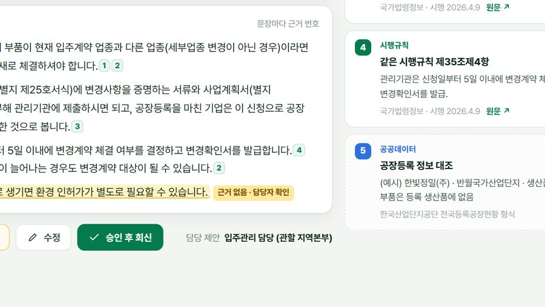
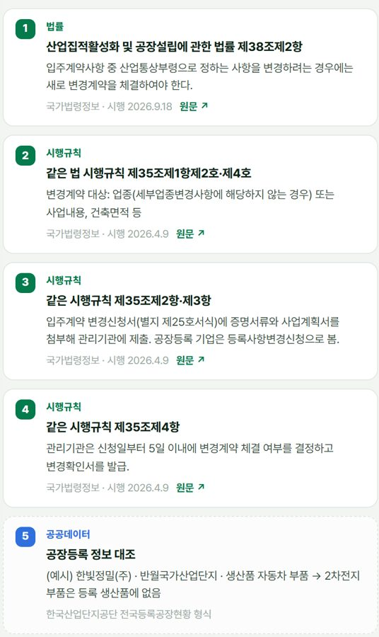
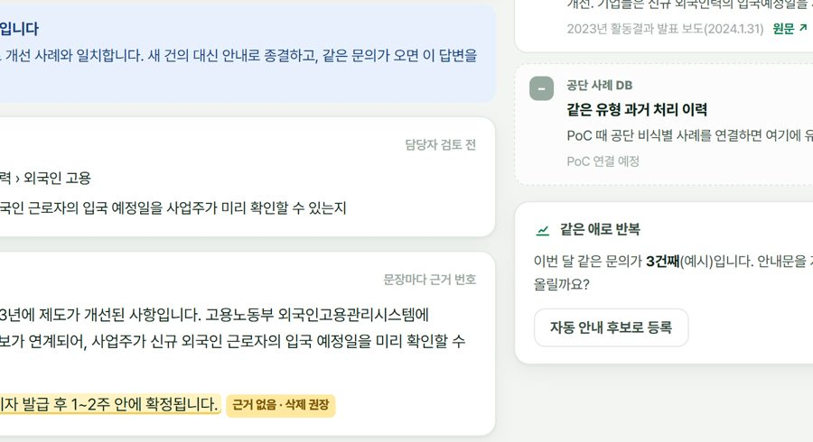
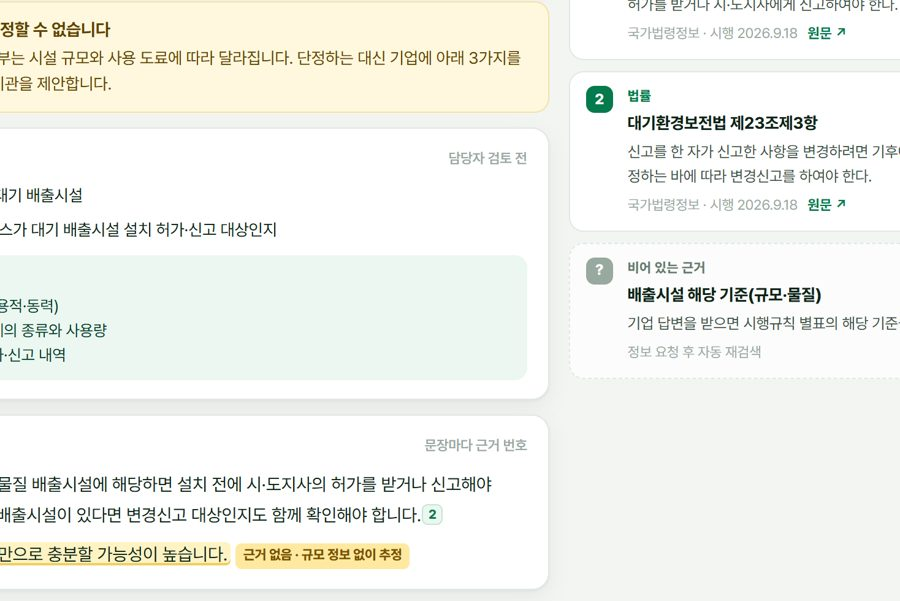
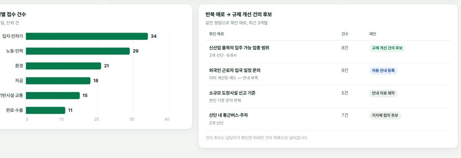
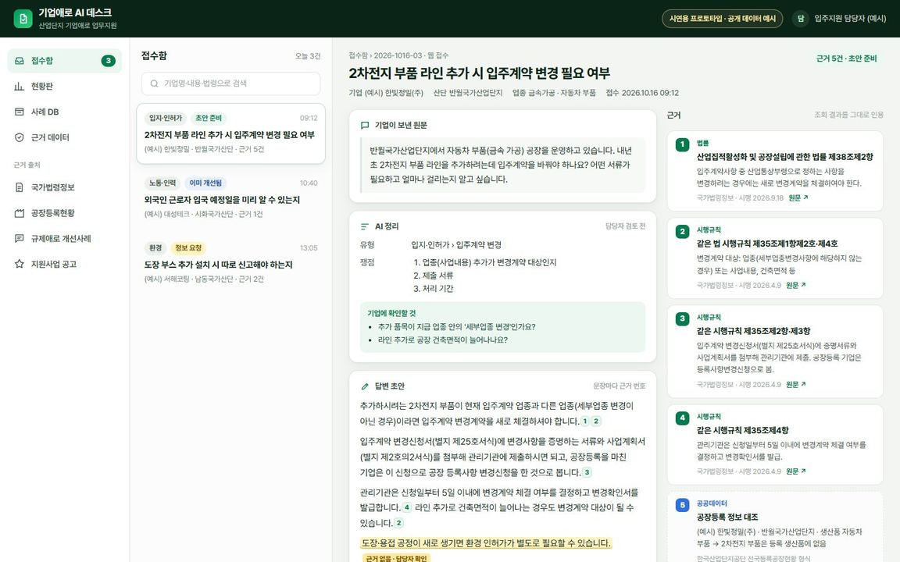
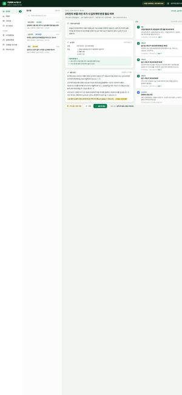
애로 접수 → 근거 찾기 → 근거 달린 초안 → 담당자 승인 → 현황판. 이 흐름을 가장 잘 보여 주는 화면들입니다.
답이 어디서 왔는지 보여 주는 화면들. 우리 초안의 '문장마다 근거 번호'를 어떻게 보여 줄지의 기준입니다.

먼저 보세요01와 포인트'Research agent' 입력창에 질문이 들어가면, '논문·웹·임상시험 검색' 같은 작업 단계가 한 줄씩 나타나고 진행 표시가 돕니다.
우리 시연이라면애로 원문을 넣으면 '법령 확인 · 공장정보 대조 · 개선사례 확인'이 한 줄씩 켜지는 장면.
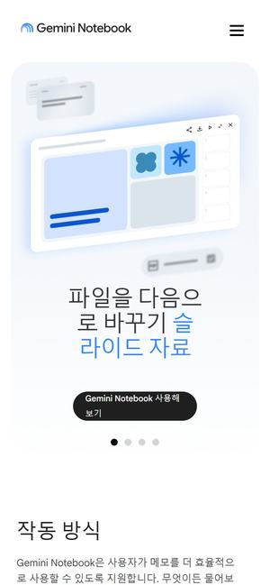
먼저 보세요02와 포인트'무엇이든 이해할 수 있습니다' 뒤로 그라데이션이 번지고, 아래 '작동 방식'에서 웹·문서·유튜브·PDF에서 뻗은 선이 하나의 답으로 모입니다. '사용자가 준 자료에 근거한 답'이라고 적어 둡니다.
우리 시연이라면법령 · 공장정보 · 개선사례 · 지원사업 네 자료에서 선이 뻗어 답변 초안 하나로 모이는 그림 — '이 답은 이 넷에서만 나온다'를 한눈에.
와 포인트해 질 녘 도시를 내려다보는 영상 위에 'Legal work, without limits.' 한 줄, 이어서 노트북으로 일하는 사람의 실루엣. 기능 설명 없이 '일하는 장면'으로 시작합니다.
우리 시연이라면시연 첫 화면을 설명문 대신 산업단지 실사 영상과 한 줄('기업애로, 근거를 붙여 답합니다')로.
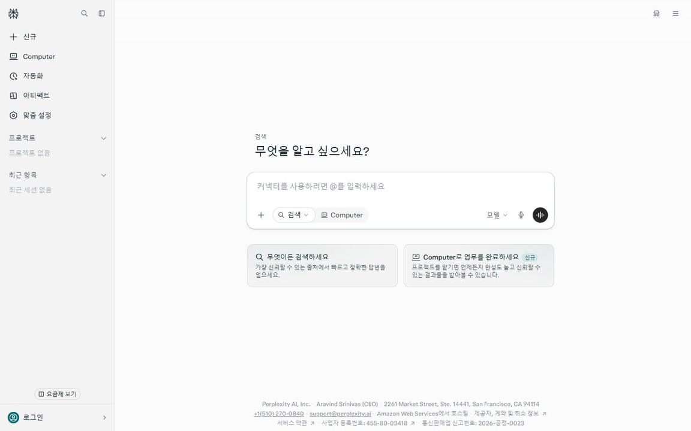
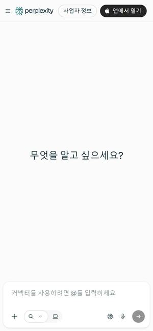
04와 포인트'무엇을 알고 싶으세요?' 입력창 하나가 첫 화면의 전부. 아래 카드에 '가장 신뢰할 수 있는 출처에서 빠르고 정확한 답변'이라고 적어 둡니다.
우리 시연이라면공단 담당자 첫 화면을 입력창 하나로 — '기업이 보낸 애로를 붙여 넣으세요'.
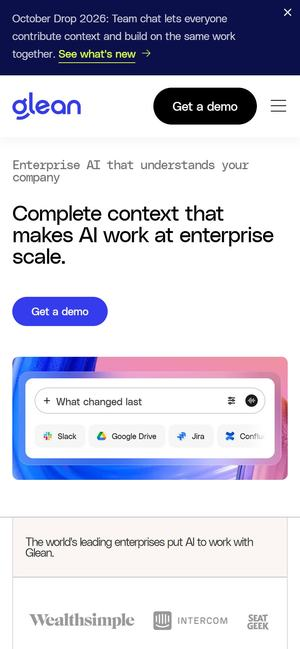
05와 포인트'Complete context that makes AI work at enterprise scale.' 아래 입력창에 질문이 바뀌어 가며 타이핑되고, 그 밑에 Slack·Google Drive·Jira 같은 연결된 자료가 칩으로 붙어 있습니다. 스크롤하면 큰 숫자 카드가 나옵니다.
우리 시연이라면입력창에 '입주계약 변경 기한이 지났는데…' 같은 실제 애로 문장이 번갈아 타이핑되게 — 무엇을 넣는 도구인지 설명 없이 보이게.
들어온 요청을 정리하고, AI가 먼저 답하고, 사람이 마무리하는 화면들. 우리 '승인 후 회신' 흐름의 기준입니다. Legora도 접수 기능을 'AI가 요청을 읽어 담당 팀에 넘기고, 변호사가 검토·승인해야 답이 나간다'고 설명합니다.
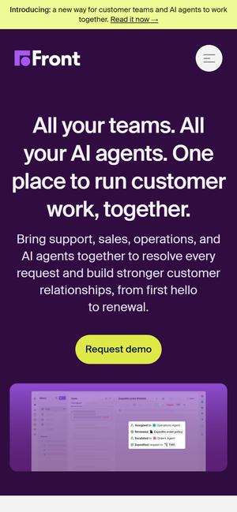
먼저 보세요06와 포인트보라색 첫 화면 속 문의함 위로 '운영 에이전트에 배정 → 주문 정책 확인 → 주문 담당 에이전트로 넘김' 단계가 하나씩 쌓이고, 마지막에 답장 초안이 뜹니다.
우리 시연이라면접수된 애로가 'AI 정리 → 법령 확인 → 담당자에게 넘김'을 거쳐 회신 초안으로 끝나는 장면 — 우리 흐름과 거의 같습니다.
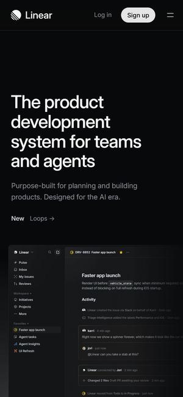
07와 포인트검은 화면 위로 실제 업무 화면이 떠오르고, 'The product development system for teams and agents' — 사람과 AI 에이전트가 같이 쓰는 도구라고 소개합니다.
우리 시연이라면접수함·담당자·처리 상태를 어두운 화면에 깔끔하게 — 공공 업무 도구도 멋있을 수 있다는 인상.
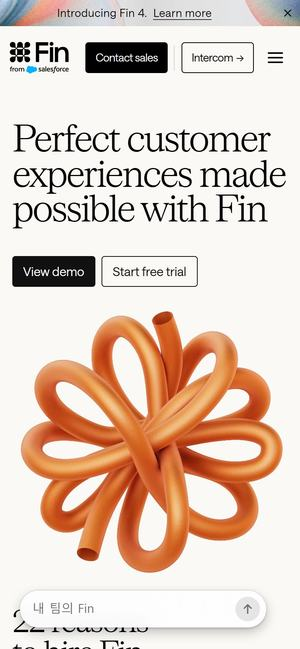
08와 포인트주황 리본 조형물이 움직이며 매듭을 짓고 'Perfect customer experiences made possible with Fin', 아래로 성과 그래프와 '1만 2천 곳 넘는 브랜드가 쓴다'는 문장이 이어집니다.
우리 시연이라면'첫 회신까지 걸린 시간'이 줄어드는 그래프를 첫 화면 바로 아래에.
와 포인트보랏빛 하늘 아래 사람들이 걷는 장면 위로 'The AI concierge for every customer', 이어서 '멤버십 혜택을 적용했어요' 같은 상담 말풍선이 뜹니다.
우리 시연이라면딱딱한 행정 화면 대신 산업단지 풍경 위에 '애로를 들어주는 창구' 분위기를.
와 포인트잠든 아기 영상 위로 'Better outcomes. Built on Sierra.', 오른쪽 아래에 병원이 보낸 듯한 안내 메시지 창이 열립니다.
우리 시연이라면공장 현장 영상 위에 상담창을 겹쳐 '현장 애로 → 바로 답'을 한 장면으로. Sierra도 공공기관용 소개에서 '자격·법률 같은 판단은 권한 있는 직원에게 남긴다'고 적어 둡니다.
심사위원이 첫 3초에 '제대로 만든 솔루션'이라고 느끼게 하는 화면들. 대표님이 직접 등록해 두신 입체·몰입 결도 함께 넣었습니다.
와 포인트'Build a Frontier Legal Organization' 아래에 'Command Center' 화면을 통째로 보여 줍니다 — 사용률 49.5% 그래프와 기능별 사용량 막대.
우리 시연이라면현황판을 '공단 기업애로 커맨드센터'처럼: 이번 달 접수·처리 기간·반복 애로를 첫 화면에.
 먼저 보세요12
먼저 보세요12와 포인트공장 속 로봇 사진 위로 홀로그램 현황판이 떠 있고 'PhysicalWorks는 LG CNS의 Robot Transformation 플랫폼 브랜드입니다', 스크롤하면 다음 문장이 흐린 색에서 하늘·보라 그라데이션으로 차오릅니다.
우리 시연이라면산업단지 공장 사진 위에 애로 현황판을 홀로그램처럼 띄운 첫 화면 → 스크롤하면 '기업애로, 근거로 답합니다'가 색으로 차오르게.
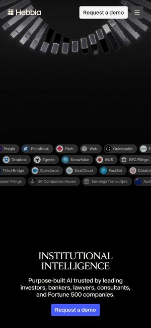
13와 포인트검은 화면에서 접힌 금속 조형물이 움직이고 'INSTITUTIONAL INTELLIGENCE', 이어서 FactSet·Earnings Transcripts·UK Companies House 같은 자료 출처가 알약 모양으로 흘러갑니다.
우리 시연이라면국가법령정보·공장등록현황·옴부즈만 사례·기업마당을 알약 줄로 흘려 '이 네 곳에서 근거를 찾는다'를 배경에.
와 포인트선으로만 그린 이글루가 떠오르다 눈 덮인 산 위 실제 이글루로 바뀌고, 번호가 붙은 얼음 블록이 하나씩 튀어나왔다 다시 맞춰집니다. 이슈 #1207에서 대표님이 고르신 결입니다.
우리 시연이라면현황판의 애로 묶음을 블록처럼 쌓고, 블록을 누르면 그 묶음의 애로가 튀어나오게 — 발표 첫 장면 한정.
국내에서 이미 쓰이는 법률·상담 AI 화면. 우리 시연이 이보다 못해 보이면 안 된다는 기준선입니다.
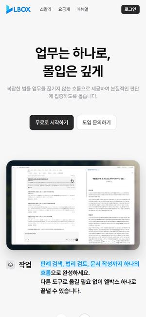
먼저 보세요15와 포인트'업무는 하나로, 몰입은 깊게' 아래 노트북 화면에서 '어떤 업무를 시작할까요?'에 질문이 들어가고, 판례가 줄줄이 달린 답이 펼쳐진 뒤 '데이터의 차이가 AI 성능의 차이'.
우리 시연이라면우리 '근거 달린 초안' 화면의 국내 기준선 — 판례 대신 산업단지 법령·개선사례로.
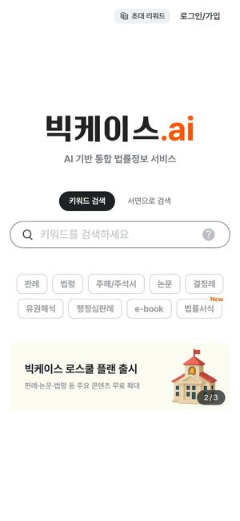
16와 포인트흰 화면 가운데 '빅케이스.ai — AI 기반 통합 법률정보 서비스'와 검색창 하나, 아래에 판례·법령·논문·유권해석 같은 자료 종류 칩이 놓여 있습니다.
우리 시연이라면담당자용 '사례 DB' 검색창 아래에 '법령 · 개선사례 · 공장정보 · 지원사업' 칩을 두어 찾는 범위를 고르게.
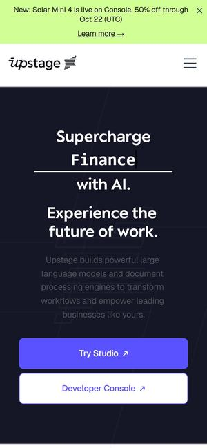
17와 포인트'Supercharge ___ with AI.' 빈칸에 Insurance·Healthcare 같은 업종이 차례로 바뀌어 들어가는 첫 화면.
우리 시연이라면'입지·인허가 / 환경 / 인력' 같은 애로 유형이 같은 자리에서 바뀌며 소개되는 첫 화면.
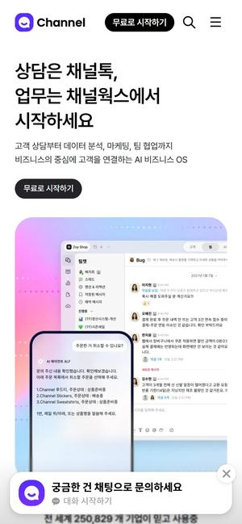
18와 포인트'상담은 채널톡, 업무는 채널웍스에서' — 분홍빛 그라데이션 위에 PC 상담 화면과 휴대폰 화면이 함께, 아래로 '전 세계 250,829개 기업이 믿고 사용중'.
우리 시연이라면공단 담당자 PC 화면과 기업 담당자 휴대폰 화면을 나란히 — 같은 애로를 양쪽에서 보는 그림.
옷 사진을 사람 사진에 입혀 보여 주는 서비스입니다. 핵심인 '입혀 보기'는 이미 상용 AI가 장당 100원 안팎에 팔고 있어, 우리는 그 위에 고르기·주문 화면을 붙이면 됩니다. 히든메이커스(의류 브랜드 하시에)는 카페24 쇼핑몰을 쓰고 있어, 상품 페이지에 '입어 보기' 버튼이 붙는 모습이 가장 현실적입니다.
옷 사진이 사람에게 입혀지는 순간을 보여 주는 화면들. 피팅 시연의 핵심 장면 기준입니다.
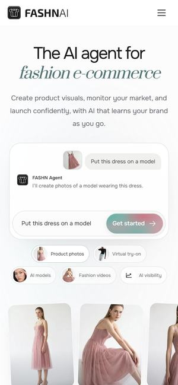
먼저 보세요19와 포인트'The AI agent for fashion e-commerce' — 분홍 드레스 사진 사이 입력창에 'Put this dress on a model'을 넣자 모델 착용 사진이 나오고, 아래에선 같은 방식으로 코트 착용 사진 → 5초 영상까지 만듭니다.
피팅 시연이라면하시에 옷 사진 한 장 → 착용 사진 → 걷는 5초 영상. 이 회사 피팅 API는 장당 약 0.075달러, 상업 이용 가능.
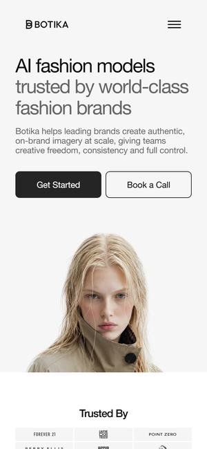
먼저 보세요20와 포인트얼굴이 바뀌어 가는 모델 사진 옆 'AI fashion models trusted by world-class fashion brands', 이어서 'Any image to model' — 바닥에 놓거나 옷걸이에 건 옷 사진이 모델 착용 사진이 됩니다.
피팅 시연이라면공장에서 바닥에 놓고 찍은 샘플 사진으로 상세페이지용 착용 사진까지.
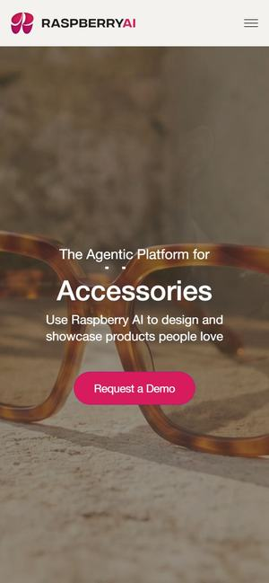
21와 포인트모델 사진이 화면을 채우고 'The Agentic Platform for ___' 빈칸이 Fashion → Apparel로 바뀝니다. 아래에선 옷 스케치 파일에 '카멜 베이지, 무광 직물, 랩 V넥 미니 드레스'처럼 글로 지시하는 화면이 나옵니다.
피팅 시연이라면피팅 다음 단계까지 넓힌 그림 — 디자이너 스케치에 말로 지시해 시안을 만드는 화면.
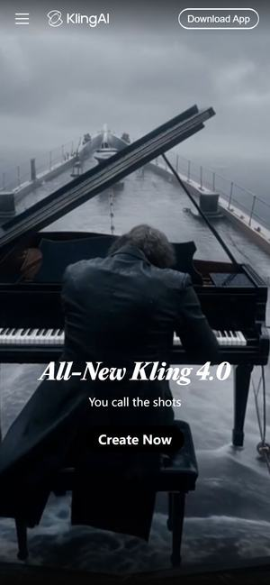
22와 포인트'All-New Kling 4.0 — You call the shots'. 입력창에 적힌 '거센 파도 속 배 위에서 피아니스트가 연주한다'가 그대로 뒤의 영상입니다.
피팅 시연이라면피팅 결과를 화면 가득 크게, 입력은 아래 한 줄로 — '이 옷을 이 사진에'. 이 회사의 피팅 AI(Kolors)는 장당 0.07달러에 상업용으로 팔립니다(fal.ai 기준).
국내에서 이미 나온 가상 피팅·3D 의상 사례. 히든메이커스에 '국내도 이미 이렇게 한다'를 보여 줄 근거입니다.
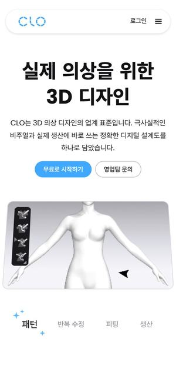
23와 포인트'실제 의상을 위한 3D 디자인' — 커서가 마네킹에 선을 긋자 파란 원피스가 입혀집니다.
피팅 시연이라면하시에 옷을 가상 마네킹에 입혀 보는 화면 — 사진형 피팅과 3D 피팅을 같이 비교.
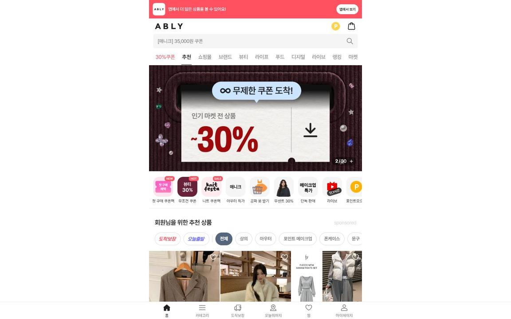
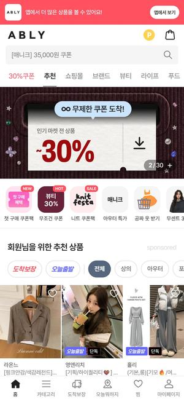
24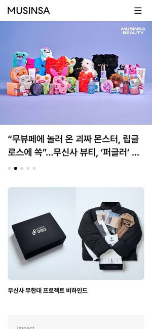
25와 포인트흰 바탕에 큰 사진 카드가 넘어가고, 스크롤하면 '온라인에서 오프라인으로. 대한민국에서 전 세계로.' 문장이 회색에서 검정으로 차오릅니다.
피팅 시연이라면피팅 시연의 소개 화면은 이 결로 — 흰 바탕에 옷과 결과 사진만 크게.
Front처럼 애로가 들어오면 '분류 → 확인 → 담당자에게 넘김'이 하나씩 쌓이고, Elicit처럼 '법령 확인 · 공장정보 대조 · 개선사례 확인'이 차례로 켜지고, Gemini Notebook처럼 네 자료에서 뻗은 선이 초안 하나로 모이고, Harvey처럼 현황판으로 끝납니다. 지금 시연의 실제 조문·사례를 그대로 쓰고 움직임만 더하면 돼, 10/29 발표 전에 가장 확실합니다.
피지컬웍스처럼 공장 사진 위에 현황판을 띄운 첫 화면, 이글루처럼 애로 묶음을 블록으로 쌓은 입체 장면, Hebbia처럼 자료 출처가 흐르는 배경, Linear 같은 어두운 업무 화면. 첫인상은 가장 강하지만 만드는 데 손이 많이 갑니다.
FASHN처럼 '이 옷을 모델에게 입혀 줘' 한 줄로 착용 사진이 나오고, Botika처럼 바닥에 놓고 찍은 옷 사진이 모델 사진으로 바뀌고, 에이블리처럼 사진 한 장으로 여러 벌을 입어 보고, 보고핏처럼 카페24 상품 페이지에 '입어 보기' 버튼으로 붙입니다. 2지망을 넣기로 하시면 이 조합으로 시연 화면을 만듭니다.
대표님이 조합을 고르시면 우리 시연 3건(입주계약 변경·외국인 근로자·도장시설)과 현황판을 그 결로 다시 만들어 10/29 발표에 씁니다. 가상 피팅을 2지망으로 넣기로 하시면, 옷 사진 한 장으로 결과까지 보여 주는 시연 화면 하나를 더합니다.